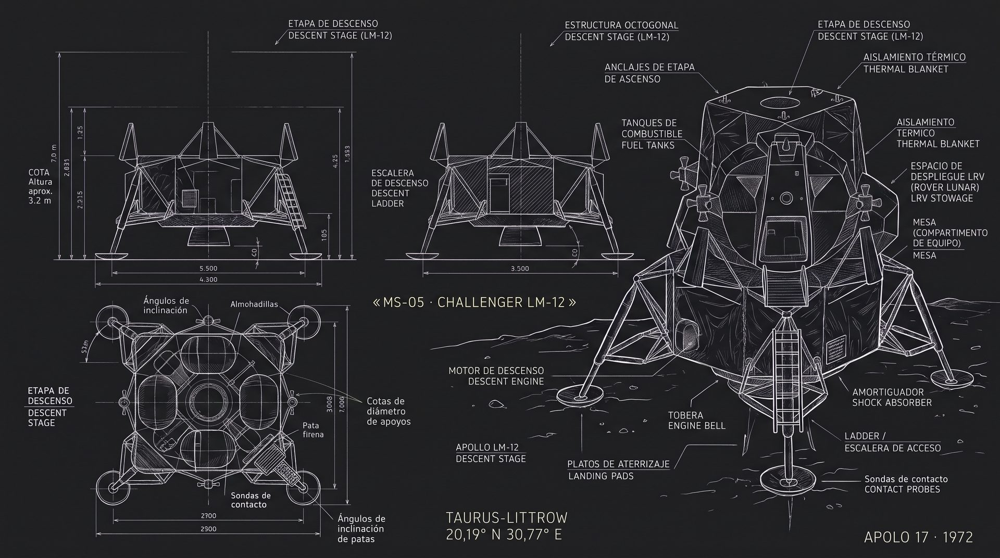

Etapa de descenso del Challenger

La mitad de abajo del módulo lunar del Apolo 17, en el valle de Taurus-Littrow. Fue el último alunizaje tripulado y lleva sola más de medio siglo.
Etapa de descenso del LM-12, posada en Taurus-Littrow el 11 de diciembre de 1972. Abandonada in situ. Personas: Gene Cernan, Harrison Schmitt
Lo que hizo
- Un valle entre montañas — Me posé en Taurus-Littrow, un valle rodeado de montañas, con material muy antiguo al alcance. Cernan y Schmitt recorrieron el valle con el rover y trajeron la muestra más antigua que se ha traído de la Luna.
- Llevaban un geólogo — Por primera vez entre los Apolo, uno de los dos que bajaban era geólogo de formación. Eso cambió lo que se recogió y cómo se describió sobre el terreno.
- La despedida — Cuando se fueron, la escalera que apoyaba en mí dejó de usarse. Mi mitad de arriba se estrelló a propósito contra el valle para que los sismómetros registraran el golpe. Desde entonces nadie ha vuelto a pisar la Luna.
Modelo 3D, chat y cómic, en tres idiomas
Fuentes
Ver el índice completo · Proyecto del NASA Space Apps Challenge 2026. Contenido con fuentes citadas.